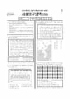

문제지


시험지를 먼저 풀어 보세요. 등급컷·표준점수·난이도는 흐리게 가려 뒀어요.
정답 변경 없음
이의신청 2문항 · 평가원 상세 답변 2문항
평가원 답변
이 문항은 정약용의 과학기술론을 이해하는지를 평가하기 위하여 출제하였습니다. 첫 번째 지문은 정약용이 저술한 『중용강의』에서 발췌한 것으로, 여기서 정약용은 인간이 사물을 이용할 수 있다는 점을 강조하였습니다. 두 번째 지문은 정약용의 「기예론」의 일부로 동물과는 다른 인간의 능력을 지혜와 기술에서 찾고 있습니다. 이상의 지문은 국사 교과서 320쪽 본문에 정리되어 있는 정약용의 과학기술론과 내용상 일치합니다. 지문과 교과서의 내용을 이해한다면 정약용의 과학 기술상의 업적과 서양 과학 기술 수용 노력을 고를 수 있을 것입니다. 첫 번째 지문은 호론 계열의 인물성이론과 외형상 유사하나, 호락논쟁의 맥락과 호론 계열의 전개를 이해한다면 혼동하지 않고 풀 수 있는 문항입니다.
평가원 답변
고려 말의 전제 개혁은 관리들에게 지급했던 수조권을 정비한 것이지, 토지의 소유권을 조정하거나 백성들에게 토지를 나누어준 것이 아닙니다. 이 점을 염두에 두고 제시문 (다)를 읽어 보면 다음과 같이 이해됩니다.
첫 번째 문장 : “전하께서 즉위하기 전에 국내의 토지를 몰수하여 국가에 귀속시키고 식구 수를 헤아려 토지를 나누어 주어서 옛날의 올바른 전제를 회복하려 하였다.”는 고려 말에 전제 개혁을 계획하는 과정에서 이성계 등이 전국의 토지를 몰수한 뒤 다시 분배하려는 생각을 가지고 있었음을 보여 줍니다. 즉, 백성들에게 토지를 나누어주려고 했던 것입니다.
두 번째 문장 : “그러나 당시 세족들이 온갖 방해를 하여 백성들로 하여금 혜택을 입지 못하게 하였으니, 어찌 한스러운 일이 아니겠는가.”는 첫 번째 문장에서 나타난 개혁 방안, 즉 백성들에게 토지를 나누어주려고 했던 것이 권문세족들의 반대로 성사되지 못했음을 보여주고 있고, 이 점을 한탄하고 있는 것입니다.
세 번째 문장 : “하지만 뜻을 같이 하는 대신들과 함께 이전 시대의 법을 연구하고 현실을 참작하여 국내의 토지를 측량한 다음 관리들에게 지급하였다.”는 앞의 두 문장과 연결되어, 백성들에게 토지를 나누어주려던 것이 권문세족들의 반대로 성사되지 못한 가운데, 현실에 맞는 방법으로 전제 개혁을 실시했다는 내용입니다. 여기서 관리들에게 지급하였다고 한 것은 물론 수조권입니다.
결국 제시문 (다)는 “본래 백성들에게 토지를 나누어 주려고 하였으나, 세족들의 반대로 이루지 못했고, 관리들에게 수조권을 새로 지급하는 것으로 전제 개혁을 마무리했다.”는 것으로 이해해야 합니다. 따라서 정도전의 이 말 속에 “백성들에게 토지를 나누어 주지 못한 데 대한 아쉬움이 나타나 있어.”라고 한 ㄹ의 내용은 틀린 것이 아닙니다.
시험 전체 관련 보도 4건은 2006학년도 대학수학능력시험 회차 페이지에 모아 두었어요.
발행 기관: 한국교육과정평가원(KICE). 파일 위치: 이 사이트가 보관한 사본. 저작권은 발행 기관에 있습니다. 원본과 다르거나 게시 중단이 필요하면 연락처로 알려 주세요. 등급컷 출처 구분은 데이터 원칙에서 설명합니다.